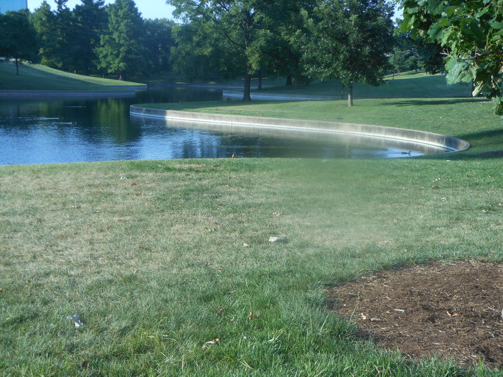

Outdoor Exploring in St. Louis!
♦ Union Station!♦
Far from being simply an antiquated train station or future aquarium, St. Louis Union Station possesses its own allure. An architectural marvel in its own right, Union Station also houses still-functional trains and hundreds of brightly-colored koi fish which are as hungry as they are inquisitive of human visitors! In the center of the pond lay intricate metal structures which set the stage for a magnificent fire and light show synchronized to up-tempo music! Holding over a hundred years of transport history, Union Station is a magical place that quickly transforms anyone with a little imagination back into a time when all roads led through St. Louis...
♦ Missouri Botanical Garden!♦


Despite its name, this garden is home to more than just beautiful flowers! A leisurely stroll through the Missouri Botanical Garden will lead you to a Japanese-style bridge and dancing koi fish! There is a children's garden dedicated to George Washington carver, a world-renown botanist and scientist, and even plants with leaves bigger than a human head! Exotic flowers bloom confidently indoors even during the frigid winter months, and winding paths lead to mysterious destinations. Indeed, there is serenity throughout the vast gardens, even when the flowers and sunshine are embarking on a seasonal nap.
♦ The Gateway Arch!♦
While a remarkable structure in its own right, the Arch grounds are equally wondrous! With expansive greenery and beautiful scenery, it's easy to forget that you are mere minutes from a major highway system! Equally accommodating (and spacious!) for both tourists and locals alike, the Gateway Arch grounds are an ideal location for summer picnicing, outdoor concerts, fireworks and festivals!
♦ City Garden!♦
This outdoor gem is literally hidden in the middle of the bustling business district in downtown St. Louis! While generally marketed as a fun place for kids to explore, adults can find excitement in City Garden, too! Enormous structures and larger-than-life art sculptures allow for inter-generational climbing and enjoyment! Summer days in City Garden provide a quick cool off in the fountains and shallow pools, while summer nights showcase a visual array of colorful lights!
♦ Forest Park!♦
While most people find enjoyment via the various art and cultural institutions located in Forest Park, there's also an abundance of natural beauty to explore! Housing both bike paths and grass, woods and streams, Forest Park is a great place for action, but also a phenomenal place to meditate, read, relax and just BE. The trees are diverse and friendly; the ducks near Jefferson Lake are as curious (and hungry!) as the koi fish in Union Station! Located adjacent to major hospitals and highways, Forest Park somehow manages to maintain its sense of serenity, to provide respite from the chaos of city living.